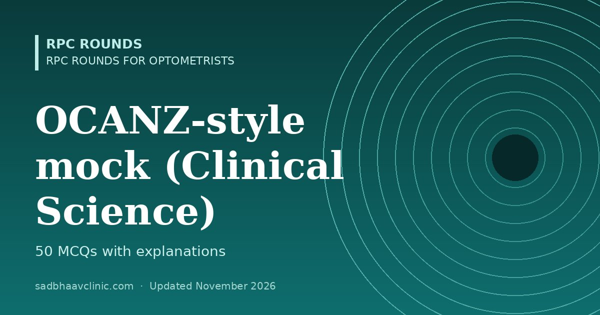

Last updated: November 2026
A 50-question practice test in the style of the OCANZ Competency in Optometry Examination Clinical Science paper, for optometrists planning to work in Australia or New Zealand.
These are original practice questions written for revision; they are not OCANZ questions. The real Clinical Science paper is about 3 hours, and there is a separate short-answer Diagnosis and Management paper. For eligibility and exam steps, see optometry exams abroad.
List the topics you got wrong, open each linked page, and retake the test after a week. Try the other optometry mocks: B.Optom, NBEO-style, OCANZ-style and Gulf licensing.
More free mocks: all mock tests.
📘 Want more exam-ready material? See Most Commons in Ophthalmology on Kindle, or browse all my books.
Looking for an eye specialist in Ahmedabad? Learn about our Eye Department or book a consultation with Dr. Dhaval Patel.